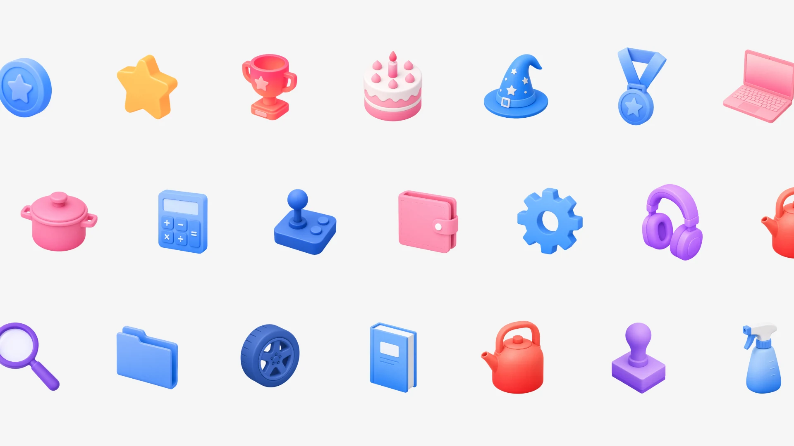
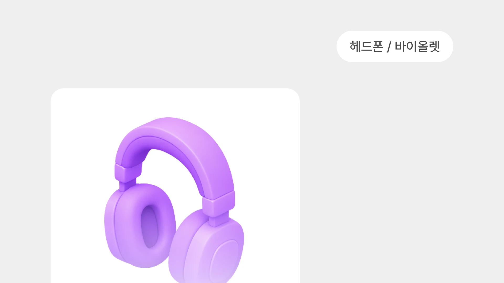
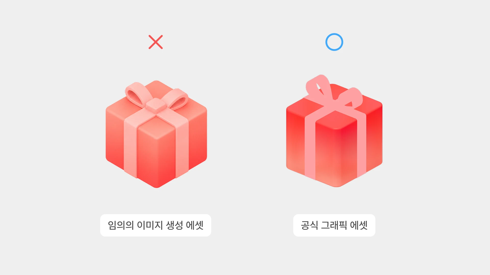

3D 에셋 프로토타입 생성
브랜드팀이 정의한 3D 에셋 스타일을 GPT 이미지 생성으로 빠르게 구현하는 프로토타입용 툴입니다. 실제 서비스 적용이나 고도화 작업에는 가급적 시스템에서 제공하는 정식 3D 에셋을 사용해 주세요.

*GPT 이미지 빌더는 GPT 유료계정을 사용해야 정상 작동합니다.
사용방법
사용방법은 간단합니다. 만들고 싶은 오브젝트의 이름과 색상을 ‘오브젝트 / 색상’ 형식으로 입력해 주세요. (예: 헤드폰 / 바이올렛)
*제공 색상: 블루 · 그린 · 오렌지 · 레드 · 바이올렛 · 다크블루 · 핑크

주의사항
AI 생성 이미지는 브랜드 원칙·시스템 호환성이 보장되지 않으므로 시급한 프로토타입 단계에서만 사용해 주세요. 실 서비스나 고도화 작업에는 가급적 공식 3D 에셋을 사용하거나 브랜드팀에 제작을 요청해 주세요.
그래픽 제작 요청 채널